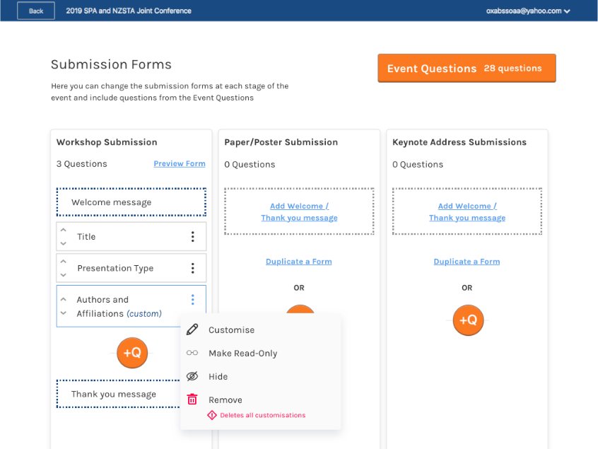
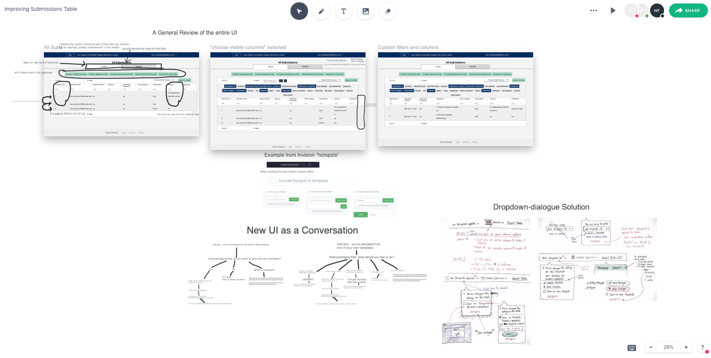
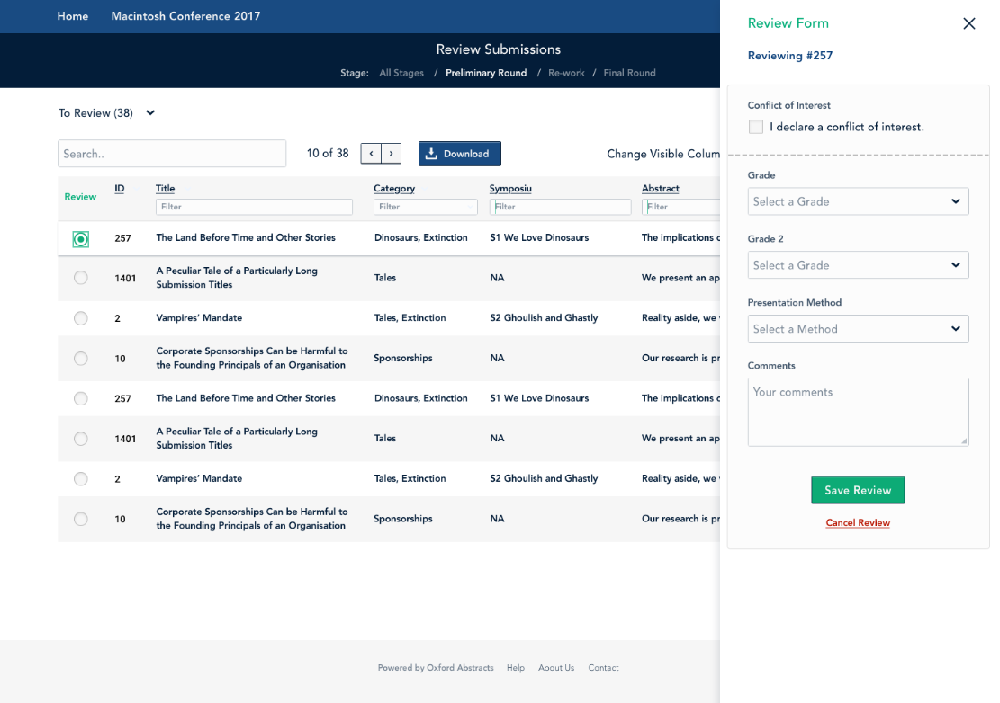
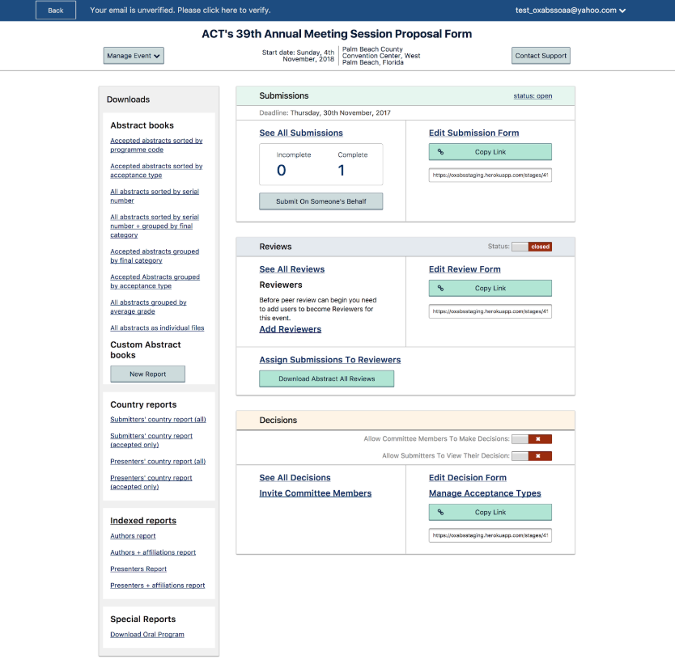

Oxford Abstracts offers the full-suite of conference management services. The job of managing a conference (or other similar event) is complicated and separated across a variety of places - some digital, some physical.
Additionally, there is the task of organising the various groups of people involved: submitters (sometimes organised into symposia), submission-reviewers, decision makers (often organised into committees) and reminding them of their duties and deadlines. Many of these jobs can be streamlined or performed infinitely faster by a computer.
Working in agile sprints, I began with a ‘submission form builder’ and a responsive submission form to support submission updates from any device. This was to be the core of the project.
Where are the settings for my settings?
Beyond this, the complexity of the tasks elevated to include features like multi-stage conferences, an online-programme for each event, and even bulk-assigning submissions to multiple reviewers based on their self-determined category - a job which requires the user, a conference administrator, to have a view of every piece of data associated with the submissions and reviewers, in an order of their choosing... simultaneously.
On a call discussing user journeys and logical next steps
This project taught me the perils of making any assumptions about "how many".
Sprint-based design in a complex system requires quickly picking up a deep knowledge of the processes and rapidly prototyping to find and test solutions in as short a period of time as possible. This has involved user testing remotely as well as travelling to offices around the country to demonstrate to and quiz the users on their personal gripes with their current solutions and how they could be improved.
In addition to the design work (which included an interactive styleguide) I was responsible for building the front-end for a large proportion of the interfaces. This involved using various technologies including HTML, Handlebars, Elm, CSS and Sass.
Built, like this website, using Sass and BEM methodology to unify styles in a library.
Since release the feedback has been generally positive. One review came from an administrator at the National Council on Family Relations who said:
“This new system is wonderful. Our people will love it. It is great that they can sign in and go directly to the form. It is a comprehensive system which can be complex, but except for the few questions I had, it was easy to set up. Even though it could be complex, the system is so user-friendly (after all I was able to do everything myself - and I am basically a self-taught, 75 year old lady, and if I can figure it out, it is a great system).”